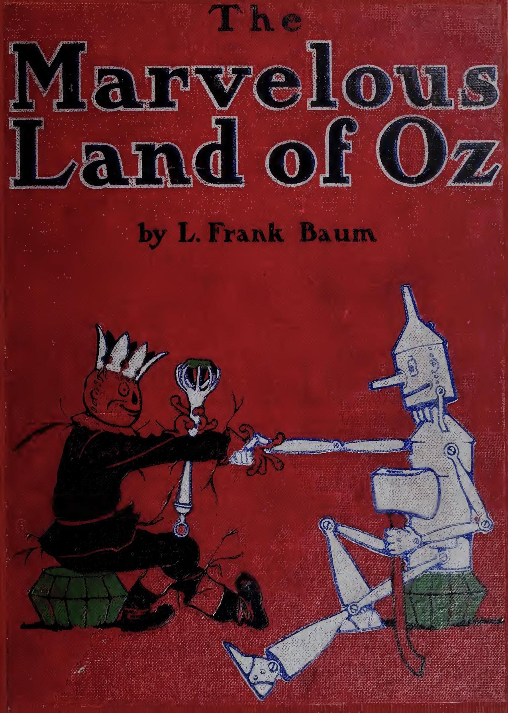

This project is a text analysis of the first two Oz books by Frank L. Baum. It uses the tidytext framework in R developed by Julia Silge and David Robinson. For more information see their work Text Mining with R
The word data for the graphs can be found at the Data link above. It includes the total count of all of the content words (nouns, verbs, adjectives etc) from the texts with the function words (article, prepositions, etc) removed. The texts were taken from Project Gutenberg.
The Sentiment Comparison tracks the positive and negative sentiments of the text over time. The sentiment is graphed against the plot line at different intervals (every 10 lines, every 50 lines and every 100 lines).
The word cloud graphs include the most common words in the two texts and also a cloud showing the most common positive and negative words. Enjoy the site.
